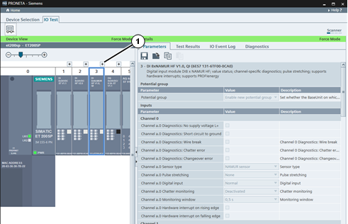

The IO Test task serves to check the wiring of a distributed IO device even before installing a CPU, and to protocol the test results in a quick, error-free and simple manner.
In IO Test mode, the screen consists of two main views:
“Device View” (1), a graphical representation of the tested device
The “Details” table (2) which shows you additional information about the tested device and the test in general.
Function Bar
The following function is available in the function bar:
|
Icon |
Name |
Function |
|
|
Force and Monitor Values |
Activates and deactivates control of the device through PRONETA Basic for the IO Test. |
|
NOTE |
To perform the IO Test, PRONETA Basic establishes a PROFINET application relation (AR) with the target device. Make sure that no other PROFINET controller occupies this connection. |
The state of the IO Test is indicated by the color of the “Device View” and “Details” table header bars:
Light green indicates the IO Test is active. In addition, the words “Force Mode” appear at the right of the head bar.
Dark petrol indicates the IO Test is inactive.
Usage
The device view shows a symbolic representation of the device you selected for the IO Test mode. The status and IO LEDs are updated in real time to reflect the state of the physical device.

To get a larger view of any module click the “+” symbol (1) above the module. A small Popup Window will appear.
Clicking on any of the modules here will show the module’s parameter table in the “Details” view, or highlight the corresponding section, depending on the tab chosen.
Modules with information in their diagnostics buffer are displayed with a red header.
Digital IO
Click on any LED symbol of an output module to toggle the status of the corresponding output. Likewise, voltage applied to any input will light up the corresponding input module LED.
To force digital values, you can also use the “Test Results” tab in the Details View .
Analog IO
Read analog values from input and output modules in the same fashion.
To force analog values, use either the Popup Window or the “Test Results” tab in the Details View.
|
NOTE |
Optional plugged connection terminals (3DI/LC modules) of Motor Starter units will only be shown after Force mode has been activated. |
Popup Window (IO Test)
Usage
Above each module of the device in the Device View, a “+” symbol allows you to open a popup window with a larger symbolic view of the module’s inputs and outputs. If you open several modules, their popups will be arranged in a row within a single window.

Click the close icon “´” in the top right of the popup window segment, or the “-” symbol above the module in the device view, to close the popup for this module again. To close the whole window click the close icon “´” in the top right of the window. To rearrange the modules within the popup window, click the table header of the module in question and drag it to the desired position.
Digital IO
Digital inputs and outputs can be monitored and forced, respectively, by viewing or checking and unchecking the fields corresponding to their connections. Green fields indicate active lines.
Analog IO
For analog modules, symbolic channel names can be entered in the fields next to the indicated channel numbers. These will automatically be copied into the test protocol.
Analog output values can be forced by either entering the numeric value in the corresponding field, or by dragging the slider across the slider bar below. Clicking the symbol next to the field will reset the output to the default value.
The Details Table consists of four tabs, each with its own function bar:
Parameters to set the module parameters
Test Results to perform and protocol the wiring test for the device
IO Event Log to monitor regular events like the changes of input and output values of a module
Diagnostics to record irregular system events like the pulling and plugging of modules.
This tab gives an overview over the parameter set of the module selected in the device view. Parameters can be only edited while “Force and Monitor Values” is not in operation (see IO Test Mode, section “Function Bar”).

The parameter set can be stored to a file on disk, loaded from a file, and copied and pasted from the windows clipboard to transfer the parameters to a different module.
Function Bar
The following functions are available in the function bar:
|
Icon |
Name |
Function |
|
|
Save Parameters |
Saves the current parameter set of the whole device to disk. |
|
|
Load Parameters |
Loads a previously saved parameter set from disk and assigns it to the current device. |
|
|
Copy Parameters |
Copies the parameter set of the currently selected module to the Windows clipboard. |
|
|
Paste Parameters |
A previously copied module parameter set will be pasted from the Windows clipboard to the currently selected module. The icon is greyed if the parameter set in the clipboard does not fit the selected module. |
The commands “Save Parameters” and “Load Parameters” transfer parameter sets between devices and are useful to configure a number of identical devices. Opposed to that, “Copy Parameters” and “Paste Parameters” are used predominantly to “clone” module configurations within one device.
This tab offers the functionality for the actual IO Test of the currently selected device.

The test table is vertically divided into sections according to the IO modules present. Each section can be collapsed and expanded again by clicking on the triangle symbol “►” in the section header.
The test table consists of the following columns:
|
NOTE |
The values for “Symbolic Name” and “Address” serve only as memory aids for the tester. |
The IO Test can be suspended and resumed at a later point in time by saving and loading the protocol.
After completion of the test, the protocol can be stored to document the proper wiring of the device. (See the Function Bar for details.)
The following functions are available in the function bar:
|
Icon |
Name |
Function |
|
|
Save Protocol |
Stores the results of the current IO Test to disk (format: CSV), either when the test is completed, or when the test is interrupted. |
|
|
Load Protocol |
Loads test results of an earlier IO Test from disk to proceed with testing. |
|
|
Reset Test Protocol |
Discards the results of the current test and allows you to start over again. All results will be deleted from PRONETA Basic. |
|
|
Import Symbolic Names from an AML file |
Imports symbolic names for device /IOs from an AML file (see Using an AML File as Reference.) |
Using an AML File as Reference
To provide symbolic names for IOs, an AML file can be used.
The following features of the device to be tested must match the name of the device in the AML file:
If this is the case and the AML file contains symbolic names for the IOs, then the names from the AML file will be used for the IOs in the tested device, and shown in the column “Symbolic Name”.
This tab records a log of all regular events (like changes of the values of inputs and outputs) which occurred to the modules while the IO Test was active.
Clicking on a column header will sort the table accordingly.

Function Bar
The following functions are available in the function bar:
|
Icon |
Name |
Function |
|
|
Save IO Event Log |
Stores the event log to disc (format: CSV). |
|
|
Reset IO Event Log |
Clears all entries from the current event log. |
The table in this tab shows a record of all irregular events which occurred to the device while the IO Test was active, like the pulling of modules or a signal wire break.
If the diagnostics buffer contains events pertaining to a module, the corresponding module header in the Device Table will be displayed red.
Clicking on a column header of the table will sort the table accordingly.
Selecting a table entry will highlight the corresponding module in the Device View. In return, selecting a module in the Device View will highlight the first entry concerning the module in this table.

The table consists of the following columns:
“Slot”
“Module”
“Channel”
“Symbolic Name” (as entered in the test protocol tab)
“Description”
“Details”
“Time Stamp”